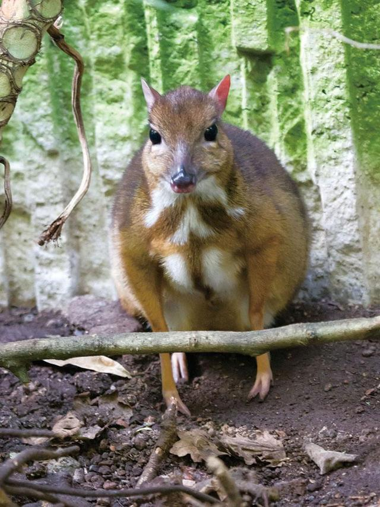

📇
基础名片
Basic Info
威氏鼷鹿
学名：Tragulus williamsoni ，别名：威氏小鼷鹿、云南鼷鹿、鼠鹿
地位：中国最小的有蹄类动物，也是鼷鹿科中体型最小的物种
保护级别：国家一级重点保护野生动物、极危 (CR)
学名：Tragulus williamsoni ，别名：威氏小鼷鹿、云南鼷鹿、鼠鹿
地位：中国最小的有蹄类动物，也是鼷鹿科中体型最小的物种
保护级别：国家一级重点保护野生动物、极危 (CR)
✨
外形特征
Morphology
外形特征
迷你似兔，前肢短、后肢长
面部尖长，雌雄均无角；雄性具发达獠牙（上犬齿外露）
背部赭褐色 / 棕红色，腹部白色；喉胸部具标志性白色纵条纹
迷你似兔，前肢短、后肢长
面部尖长，雌雄均无角；雄性具发达獠牙（上犬齿外露）
背部赭褐色 / 棕红色，腹部白色；喉胸部具标志性白色纵条纹
🌍
分布与栖息
Habitat
分布与栖息
国内仅存于云南西双版纳勐腊县（尚勇、勐远、龙门等片区）
栖息于海拔1000m以下的热带沟谷雨林、季雨林及茂密灌丛
尤喜近水、潮湿、植被浓密的河谷地带
国内仅存于云南西双版纳勐腊县（尚勇、勐远、龙门等片区）
栖息于海拔1000m以下的热带沟谷雨林、季雨林及茂密灌丛
尤喜近水、潮湿、植被浓密的河谷地带
🍃
习性与繁殖
habits
习性与繁殖
白天藏于草丛，晨昏觅食，善奔跑、跳跃、隐蔽；喜水，遇险可游泳逃生
食性：植食性。以植物嫩叶、花果、青草为食
繁殖：全年可繁殖，孕期4–6个月，每胎1仔（偶尔2仔）
白天藏于草丛，晨昏觅食，善奔跑、跳跃、隐蔽；喜水，遇险可游泳逃生
食性：植食性。以植物嫩叶、花果、青草为食
繁殖：全年可繁殖，孕期4–6个月，每胎1仔（偶尔2仔）
🛡️
保护现状与措施
measure
保护现状与措施
全球野生成熟个体约3000–5000只，中国占比约10–20%，中国种群是该物种分布北缘的关键种群，具有极高的地理隔离与遗传独特性
保护：建立保护区、建设跨境迁徙走廊、打击盗猎
威胁：栖息地破碎化（修路、建坝、种植）、非法盗猎、天敌捕食
全球野生成熟个体约3000–5000只，中国占比约10–20%，中国种群是该物种分布北缘的关键种群，具有极高的地理隔离与遗传独特性
保护：建立保护区、建设跨境迁徙走廊、打击盗猎
威胁：栖息地破碎化（修路、建坝、种植）、非法盗猎、天敌捕食

威氏鼷鹿种群数量变化监测
威氏鼷鹿种群数量增长趋势